Albóndigas veganas de quinoa, champiñones y tomates secos
Lavar 100g de quinoa y cocerla en agua o caldo vegetal durante 12-14min. Escurrir si hace falta y dejar templar.
Lavar 100g de quinoa y cocerla en agua o caldo vegetal durante 12-14min. Escurrir si hace falta y dejar templar.
Limpiar 6 alcachofas: quitar las hojas exteriores duras y pelar el tallo. Cortarlas por la mitad.
Sofreír 1 cebolla y 1 diente de ajo picados con aceite de oliva. Añadir 200g de tomate triturado y 1 cdta de pimentón, y cocer 10min.
Calentar un poco de aceite de oliva en una olla. Dorar 2 rodajas de limón y añadir 1 diente de ajo rallado. Cocinar 2min.
Contar 100g de arroz por persona. Sofreír todo por separado: alcachofas, ceps y pimiento. Hornear berenjena y tener garbanzos cocidos.
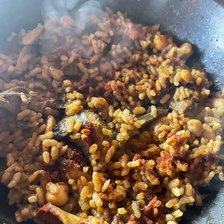
Se cortan los pimientos super chiquitos y se ponen a sofreír con abundante aceite y ajo (cebolla opcional).
Cocer 150g de arroz integral unos 35min.
Cocer 150g de arroz en agua con sal, escurrir y dejar templar.
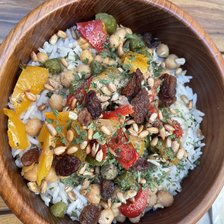
Asar 2 berenjenas enteras en el horno a 220ºC 40min, hasta que estén muy blandas.
Tostar 180g de pecanas 10min a 170ºC y picarlas.
Schiacciare 3 banane.
Mélanger 200g de flocons d'avoine, 150g de courge, 80ml d'huile de coco, 80ml de tahin, 125ml de sirop d'érable, 1 cac de vanille, 3 blancs d'oeufs, 30g de graines de tournesol, 4…
Mélanger 2 tasses de semoule (1 de fine, 1 de couscous), 1 tasse de coco râpée, 1/3 tasse de sucre, 1 tasse de yaourt, 1 cac de bicarbonate et 1 cac de levure chimique.

Para 2 botellas de 1 l.
Hervir 3 l de agua con 6 palos de canela, 6 clavos de olor, panela o azúcar, la piel de 1/2 piña (opcional) y los corazones de 3-4 manzanas. Cocinar 20min.
Cortar 2 berenjenas en dados, aliñar con aceite de oliva y sal, y hornear 35min a 200ºC.
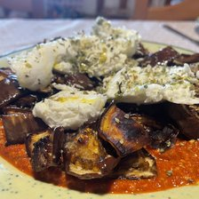
Cortar 2 berenjenas en dados y freírlas en la sartén con aceite de oliva y sal hasta que estén doradas.
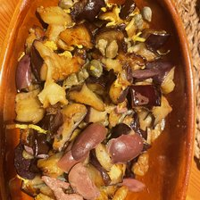
Tostar 2 rebanadas de pan de masa madre.
Poner en cada bol granola y cereales inflados tipo quinoa, amaranto.
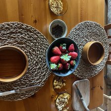
Poner en un bol 150g de yogur.
Cocer 250g de quinoa en el doble de agua 15min y dejar enfriar.
Cortar 1 boniato y 1/4 de calabaza en gajos, con la piel.
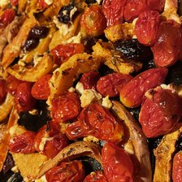
Cortar en dados 1 boniato y 1/4 de calabaza, aliñar con aceite de oliva, sal y romero y hornear 30min a 200ºC.
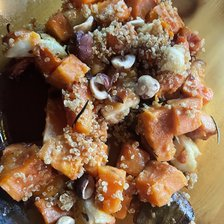
Cortar 1 boniato y 2 zanahorias en gajos, aliñar con aceite de oliva y sal y hornear 30min a 200ºC.
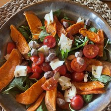
Cortar 400g de calabaza y 1 zanahoria en trozos, aliñar con aceite de oliva, sal y pimentón, y hornear 30min a 200ºC con 200g de garbanzos cocidos los últimos 15min.
De l’EcoResort Cerdanya.
Juntar las harinas, por ejemplo 1 cda de harina de garbanzo, 1 cda de harina de quinoa y 1 cda de sagú por persona, con agua y sal, y ponerlo en la sartén (tipo crepe).
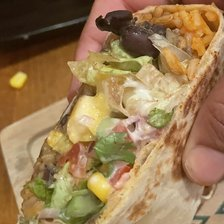
Precalentar el horno a 190ºC y preparar un molde rectangular mediano.
Saltear 200g de espinacas hasta que pierdan el agua, escurrir y picar.
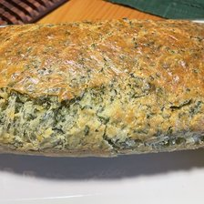
Batir 3 huevos con 120g de miel y 100ml de aceite de oliva.
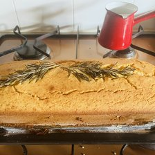
Batir 3 huevos con 250ml de leche vegetal.
Picar en dados pequeños 1 cebolla, 1 zanahoria y 1 calabacín.
Cortar 1 calabacín en rodajas y ponerlas en una bandeja con papel de horno.
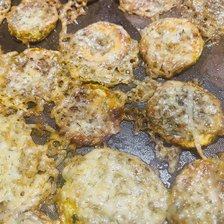
Rallar 1 calabacín grande por persona (o 2 pequeños) con el rallador grande.
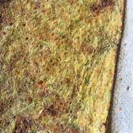
Cortar la parte de arriba de 1 calabaza pequeña (tipo potimarron) y vaciar las semillas.
Cocinar al vapor la calabaza.
Poner 1 berenjena grande entera al horno.
I carciofi si usano crudi; i broccoli bolliti o al vapore.
Juntar los ingredientes secos: 300g de harina, 1 sobre de levadura química, 150g de azúcar en polvo, 200g de azúcar moreno, 1 sobre de azúcar vainillado, las especias (2 cdtas de…
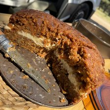
Impastare 500g di farina con 100ml di olio, 150ml di vino bianco e 1 pizzico di sale fino a ottenere una pasta liscia. Far riposare 30min.
Cocer 250g de arroz blanco. Calentar 500g de frijoles rojos cocidos con su caldo, 1 cebolla y 1 diente de ajo picados, comino y sal.
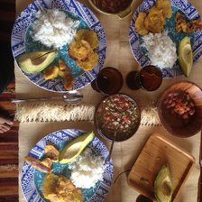
Si mettono 500g di ceci a bagno la sera con sale e una manciata di farina. Si riscalda senza farlo bollire e si lascia tutta la notte.
La sera si mettono ceci sott’acqua calda. Li facciamo riposare tutta la notte.
Juntar 2,5 cm de jengibre fresco rallado con 5 vainas de cardamomo machacadas en el mortero y 2,5 cm de canela en rama.
Cortar 2 berenjenas en rodajas de 2cm, pintarlas con 60ml de aceite de oliva, salpimentar y asarlas 40min a 210ºC. Bajar el horno a 170ºC.
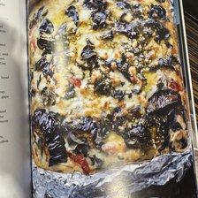
Mischiare tutti gli ingredienti: 3 uova, 1 cucchiaio di zucchero, 1 pizzico di sale, 1 bicchiere di latte, 1 pizzico di burro, 1/2 bustina di Pane degli Angeli e la buccia…
Sofreír las verduras cortadas a cuadraditos chiquitos: 1 cebolla morada, 1/2 pimiento verde, 1/2 pimiento rojo y 1 zanahoria.
Lavar y secar bien 1 manojo de kale. Quitar el tallo central y trocear las hojas.
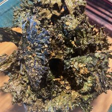
Juntar 1 taza de masa madre con 2 tazas de harina y 1 taza de leche y dejarlo reposar toda la noche, o al menos 2-3h.
Batir 6 huevos con 200ml de nata o leche, 2 cdas de harina, 80g de queso rallado, sal y pimienta.
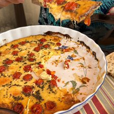
Poner 1 puñado de pasas 30min en agua.
Poner pasas en remojo.
Rallar 1 zanahoria, 1/2 cebolla, 1/2 pimiento rojo y 1 tomate.
Juntar los ingredientes secos: 30g de avena, 60g de semillas de calabaza, 30g de pipas, 130g de harina de trigo sarraceno, 60g de emmental y sal. Después añadir los líquidos: 130g…
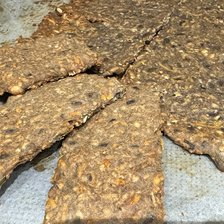
Mezclar 1,5 cdas de algarroba o cacao con 3-4 cdas de leche vegetal (70ml) y remover bien hasta que no queden grumos.
Sofreír 1 cebolla picada con un poco de aceite de oliva.
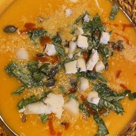
Sofreír 1 cebolla picada con un poco de aceite de oliva.
Sofreír 1/2 cebolla picada con un poco de aceite de oliva.
Mezclar 120g de harina de garbanzo con 250ml de agua y una pizca de sal, y dejar reposar 15min.
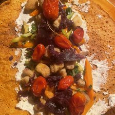
Cortar 2 patatas en rodajas finas y hornearlas 30min a 200ºC con aceite de oliva y sal.
Mezclar 100g de harina de garbanzo con 250ml de agua, sal y 1 cda de aceite de oliva. Dejar reposar 10min.
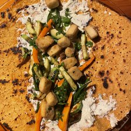
Mezclar 100g de harina de trigo sarraceno con 250ml de agua, sal y 1 cda de aceite de oliva. Dejar reposar 10min.
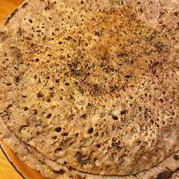
Mezclar 1/2 taza de harina de mijo, 1/2 taza de harina de arroz, 2 huevos y 1 pizca de azúcar. Añadir poco a poco 1 taza de leche de almendra y batir hasta obtener una masa líquida…
Bollire melanzane e patate.
Ponemos 30g de ceps deshidratados a remojo en 1 l de leche caliente 30min.
Se hace la bechamel: en una cazuela se vierten 50g de mantequilla, se deja deshacer y se vierten 60g de harina. Se deja tostar removiendo todo el rato y luego se echa 1/2 l de…
Se hierven 1/2 kg de patatas (4 o 5) con la piel.
Triturar 2 aguacates pequeños con 100g de yogur griego, 1,5 cdas de zumo de lima, 1 cdta de ralladura de lima, 1 cdta de aceite de oliva, sal y pimienta blanca.
Preparar el crumble juntando 150g aprox. de mantequilla (no derretida), 150g aprox. de harina y 150g aprox. de parmesano.
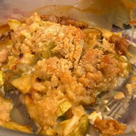
Mélanger 75g de beurre, 40g de parmesan, 60g de chapelure et 40g de farine.
Se sofríen 4 cebollas y 1 ajo cortados a tiritas finas.
Faire un puits avec 250g de farine de manioc « pandeyuca » (Colmaiz).

Se sofríe 1 diente de ajo picado y 1/2 cebolla picada con un buen chorro de aceite de oliva, removiendo durante unos pocos minutos.
Cortar 450g de boniato (otra versión: 500g) y cocerlo al vapor.
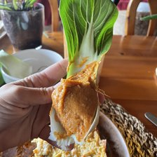
Confitar 300g de tomates cherry en una fuente con aceite de oliva abundante, sal y una rama de romero, 30min a 180ºC.
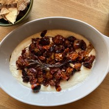
Triturar 2 remolachas cocidas con 100g de feta, el zumo de 1/2 limón, 1 cda de aceite de oliva y sal hasta que quede cremoso.
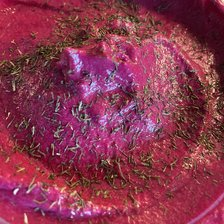
Para la masa: mezclar 1,5 tazas de harina de maíz amarillo precocida, 1,5 tazas de agua aprox., 1 cda de aceite de oliva, sal y sazón al gusto (ajo en polvo, azafrán, comino…
Cortar 300g de calabaza en dados y asarla con 250g de tomates cherry, aceite de oliva y sal 25min a 200ºC.
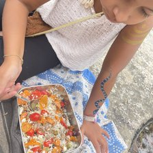
Se cortan 2 berenjenas grandes en dados de 2,5 cm. Se colocan en un colador y se pone sal por encima. Se deja reposar 30min.
Picar muy fino 1 brócoli (a cuchillo o en la picadora, como un cuscús).
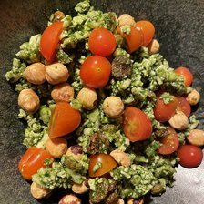
Hacer a la plancha calabacín en rodajas.
Cortar 2 calabacines en rodajas finas, aliñar con aceite de oliva, sal y hierbas provenzales, y hornear 25min a 200ºC.
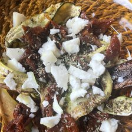
Cortar 1/2 calabaza en dados y hornearla 30min a 200ºC con aceite de oliva y sal. En la misma bandeja, hornear 1 pote pequeño de garbanzos escurridos.
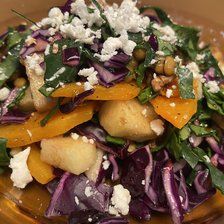
Cortar 2 endivias en tiras y 1 pera en dados.
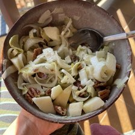
Cortar 150g de polenta fría (o tofu) en dados y dorarlos en la sartén con aceite de oliva.
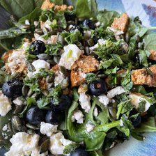
Cortar 1 paquete de halloumi en dados y saltearlo 4-5min en la sartén con 1 cda de aceite de oliva y 1 cdta de miel, hasta que se dore.
Cortar 1 rábano negro en rodajas finas y aliñarlo con 1 cdta de miel, 1 cda de vinagre y pimienta. Dejar reposar 10min.
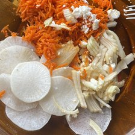
Cortar 1 hinojo en trozos finos y rallar 2 zanahorias.
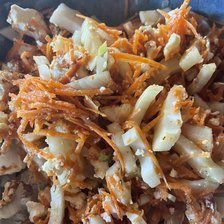
Cortar la berenjena en dados y sofreírla en aceite de oliva. Sofreír también 200g de tofu.
Cocer 300g de judías verdes 8min en agua con sal y enfriarlas.
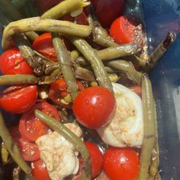
Lavar y pelar 2 de las 4 berenjenas; las otras dos se dejan con piel. Cortar en dados y ponerlas a cocer en agua con sal durante 30min.
Cortar 2 tomates en rodajas y ponerlos en la base de un plato grande. Cubrir con 2 puñados de rúcula.
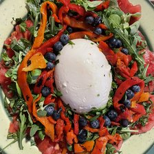
Mezclar hojas de espinaca fresca con arándanos rojos (cranberries), queso feta y nueces.
Para 1 porcion o 2 como acompañamiento.
Calabacín y cebolla a la parrilla: asar a la parrilla calabacín y cebolla en aros. Opcional: remolacha. Servir con feta, hojas verdes y estragón, y aliñar con vinagreta. (Se puede…
Cortar 2 puerros finos en media luna.
Sofreír 1 cebolla picada con aceite de oliva. Luego tirar 1 bolsa de espinacas lavadas y saltear hasta que bajen.
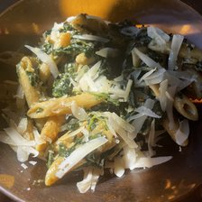
Mezclar mantequilla de cacahuete, mostaza, azúcar, salsa picante, aceite, salsa de soja, vinagre de manzana o de arroz y sal.
Si cuociono i fagiolini a metà cottura.
Triturar 250g de garbanzos remojados (crudos) con ½ cebolla, 1 diente de ajo, 1 manojo de perejil, 1 cdta de comino y sal. Formar bolitas.
Dejar en remojo 250g de garbanzos secos durante 12h. Escurrir bien (no cocerlos).
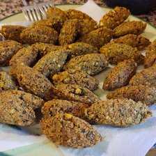
Rallar o picar muy fino 1 boniato grande, hasta que quede como granos de arroz.
Poner habas secas en remojo una noche o todo el día. Pelarlas una por una.
Si mettono fave secche a bagno tutta la notte. L’indomani si leva solo il cappuccio (la pelle di sopra, non tutta la pelle).
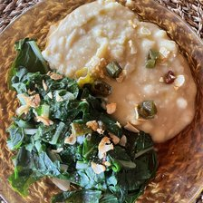
En una paella, sofreír con aceite de oliva 1 pimiento rojo y 1 pimiento verde picados, y 300g de setas troceadas.
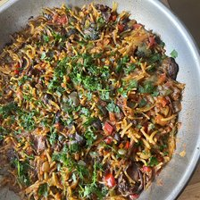
Poner en un tarro grande de cristal 1 cebolla picada, 3/4 taza de jengibre rallado, 4 dedos de raíz fresca de cúrcuma rallada, 7 dientes de ajo, 1 puñado de bayas de rosa canina…
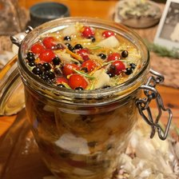
Limpiar 12 racimos de flor de acacia sacudiéndolos bien, sin lavarlos.
Schiacciare 2 o 3 volte 1 patata lessa con il passapatate.
Cocer 150g de arroz en agua con sal.
Se cocinan 450g de frijoles con el doble y medio de agua, unos 40min.
Bagnare velocemente 4 friselle in acqua fredda.
Mezclar 150g de harina de garbanzo con 300ml de agua, 2 cdas de aceite de oliva, 1 cdta de cúrcuma, sal y romero. Dejar reposar 10min.
Rallar 1 patata, 1 calabacín y 1 zanahoria.
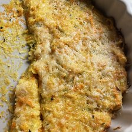
Mezclar 125g de harina de trigo sarraceno con 300ml de agua y una pizca de sal, y dejar reposar 30min.
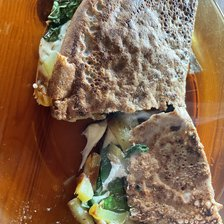
Sofreír en aceite de sésamo cebolla, almendras, ajitos, zanahoria y patata hasta que las almendras estén hechas. Opcional: añadir al principio pasas y manzana.
De Mamie Lucette.
Bollire 1 kg di patate.
Lesso 1kg di patate, le sbuccio e le passo.
Lessare 250g di spinaci, strizzarli bene e tritarli.
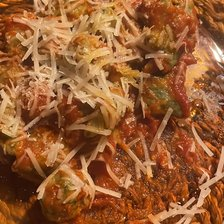
Para la pasta: cocinar 60g de cúrcuma, 1,5 cdtas de pimienta negra en polvo y 200ml de agua unos 10min, hasta que se forme una pasta espesa.
Pelar 1 calabaza butternut y cortarla en 2 a lo largo. Cortarla en rodajas finas.
Cortar en láminas finas 600g de patatas, 1 calabacín y 1 cebolla.
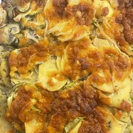
Se sofríe un poco cebolla tierna con ajo.
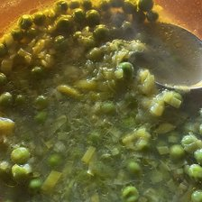
Asar o cocer al vapor 400g de calabaza y aplastarla con un tenedor.
Freír en una sartén 1 cebolla o más cortada pequeñita. Añadir 1 manzana o más y la especia (canela o curry) y cocer poco rato.
Triturar 1/2 taza de nueces y reservar.
Cocinar 450g de lentejas (en seco) de manera que queden secas o no tan hechas, para poder colarlas del caldo.
Salbitxada: asar a 220ºC 1 pimiento rojo, 2 guindillas rojas y 5 dientes de ajo (el pimiento 30min, el resto 10min) y pelarlos. Triturar 40g de almendra laminada tostada, añadir…
Mezclar todo en la batidora: 200ml de leche de coco, 2 cdas de cacao en polvo, 2 cdas de praliné (pasta de avellana) y un chorro de agave (a gusto).
Rincer 500g de pois chiches.
Triturar 250g de lentejas cocidas con 1 cda de tahini, el zumo de 1/2 limón, 1 diente de ajo, 2 cdas de aceite de oliva y sal, añadiendo un poco de agua hasta que quede cremoso.
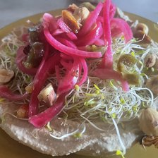
Masa: 170g de harina por bola de 280g (ver pizza napoletana by Peppino).
Atún: atún + pepinillos + tomates cherry + alcachofa + mayonesa + eneldo + (chucrut?).
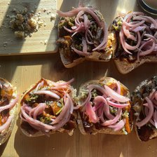
Infusionar 4 cdtas de té verde o negro en 1 l de agua caliente 10min, colar y disolver 100g de azúcar. Añadir 2 l de agua fría.
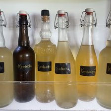
Cortar 2 berenjenas en láminas a lo largo, salarlas, untarlas con aceite de oliva y hornearlas 15min a 200ºC.
Hidratar 100g de soja texturizada en agua caliente 10min y escurrir.
Para la salsa: triturar con la batidora almendras, limón, jengibre y agua.
Picar 1 cebolla grande muy pequeña y sofreírla en una olla con aceite. Cuando la cebolla ya esté cocinada, añadir ajo y seguir dorando.
Echar 600ml de agua caliente, sin que hierva, sobre 250g de coco rallado en el procesador.
Remojar durante la noche 1 vaso (taza) de fruto seco (por ejemplo almendras o sésamo).
Cocer 150g de arroz en agua con sal.
Rehogar 1 cebolla, 1 pimiento y 1 diente de ajo picados en aceite de oliva. Añadir 2 tomates rallados.
Machacar en el mortero 4-5 vainas de cardamomo y 1 rama de canela pequeña, y rallar 3cm de jengibre fresco.
Cortar 2 calabacines en rodajas no muy delgadas (opcional: poner un poco de sal para que suelten el agua y secarlos con un trapo o papel de cocina).
Arrostire melanzane a fette lunghe.
Se hierven las berenjenas o se ponen un poco al horno para que se pueda sacar bien la pulpa. La cáscara se tritura un poco abajo y un poco arriba.
Cortar 1 berenjena en rodajas finas, ponerlas en una bandeja con aceite de oliva y sal, cubrir con parmesano rallado y hornear a 200ºC unos 20min, hasta que el queso quede…
Picar 1 cebolla, 2 zanahorias, 1 rama de apio, 1 calabacín y 2 patatas en dados.
Preparar el pico de gallo: picar 2 tomates, 1/2 cebolla y cilantro, y aliñar con zumo de lima y sal.
Se hierve 1 l de leche y se echan 200g de sémola de trigo en forma de lluvia, junto con sal y nuez moscada.
Triturar 4 tazas de leche de almendras (o 1 taza de almendras remojadas con 4 tazas de agua, y colar) con 8 dátiles y 1 pizca de sal.
Prendere 500g di peperoncini piccanti e tagliarli a pezzettini (con i guanti e le forbici).
Pulire 1kg di cime di rapa: tenere le cimette, le foglie tenere e i gambi più sottili.
De Mamie Lou.
Hervir 300g de espinacas y triturarlas con 100ml de crema de leche de soja.
En un recipiente se revuelve todo con un tenedor: 600g de harina, 14g de levadura seca (para empezar masa madre; después 7g + masa madre), 1 cda de sal (1 o 2 cdas) y 550ml de…
Cortar 1 barra de pan (tipo baguette) en rebanadas del ancho de una tostada, pero sin llegar a cortarlas del todo (de forma que el pan quede unido por debajo).
Mezclar 300g de harina de centeno integral, 200g de harina de espelta o trigo, 10g de sal, 5g de levadura seca (o 150g de masa madre) y 380ml de agua tibia.
Juntar 220g de agua y 220g de leche (de avena; se puede sustituir toda el agua por leche), calentarlo a temperatura ambiente y añadir 5g de azúcar y 5g de levadura seca o 15g de…
Amasar todo junto: 370g de harina de trigo, 150ml de leche (original: 150 cl), 75ml de agua (original: 75 cl), 15g de levadura fresca (o 3g de levadura seca, o 1 sobre de levadura…
Precalentar el horno a 180ºC y forrar un molde de 20x10cm. Mezclar 50g de copos de avena, 50g de pipas de calabaza, 2 cdtas de alcaravea, 2 cdtas de nigella y 10g de tomillo.
En un bowl se mezcla 300ml de agua (o menos) con 2g de levadura seca.
Mezclar 2 cdas de agua tibia con 5g de levadura seca y dejar reposar unos 2min aprox., para que infle.
Con la misma masa de pizza se hacen bolitas pequeñas y se extienden.
Poner en una olla abundante leche de avena. Opcional: hervir primero en la leche ralladura de limón, canela y cardamomo.
Remojar 8h 2 cdas de semillas de calabaza y 2 cdas de semillas de girasol, y luego tostarlas al horno.
Preparare il sugo con pomodoro, basilico e 1/2 cipolla.
Poner en la batidora 150g de anacardos (remojados 8h mínimo), 250ml de leche de almendra o avena, 2 cdas de levadura nutricional y 1 cdta de ajo en polvo. Triturar a máxima…
friggere le melanzane tagliate a cuadretini e preparare il sugo.
Se ponen en el horno 4 berenjenas grandes y se dejan cocer. Cuando estén hechas se les saca la pulpa.
Se hierve el brócoli. Cuando esté casi hecho se echa la pasta (tortiglioni) y se deja hervir junto.
Se corta 1 ajo en trocitos y se fríe.
Sofreír 1/2 cebolla picada con un poco de aceite de oliva. Añadir 400g de calabaza en dados, cubrir con un poco de agua y cocer 15min.
Cortar 2 cebollas grandes (de piel blanca) a lo largo en tiras finas.
Cocinar 2 puñados de espinacas en una sartén hasta que bajen.
Si soffrigge 1 cipolla piccola fatta a pezzettini super piccoli. Quando è quasi pronta si aggiunge 1 pomodoro grande senza pelle tagliato a quadrettini. Si cucina.
Cocer 200g de pasta (tipo rigatoni) en agua con sal.
Sofreír ajo cortado finito en aceite de oliva.
Rosoliamo un po’ nell’olio aglio, origano e capperi.
Unas horas antes, extender 150g de crema de cacao para untar sobre papel de horno en un círculo algo más pequeño que el molde (18-20cm) y congelar.
Derretir 200g de chocolate al baño maría. Echar 125g de mantequilla y 125g de azúcar.
Para la masa: pelar 1kg de yuca y sacarle el centro. Ponerla a hervir hasta que esté cocida (pero no muy pasada).
Tamizar 50g de harina y añadir 1 cdta de levadura, 50g de avellanas y almendras molidas. Reservar.
Cortar en rodajas 2 patatas, 1 berenjena y 2 tomates.
Pinchar 2 patatas grandes con un tenedor y hornear 40min a 190ºC.
Cocer 500g de patatas en trozos en agua con sal unos 20min y escurrir.
Cortar 4 patatas y 1 hinojo en trozos. Aplastar 3 dientes de ajo.
Sofreír 1 cebolla picada con un poco de aceite de oliva.
Ou farine de blé noir.
Picar fina 2 cebolletas y sofreírla con aceite y sal.
Escurrir 200g de tofu firme y trocearlo.
Rehogar 1 cebolla en aceite de oliva, añadir 3 pimientos rojos en tiras y cocinar 10min.
Si friggono i peperoni con un po’ d’olio e aglio.
Si dividono in due i peperoni piccoli (crudi).
Per la vigilia di Natale: si impasta il 23 sera per farle il 24 mattina, con una tazza di cioccolata.
Sofreír 2 tomates frescos picados con aceite de oliva y sal hasta que se reduzcan. Aparte, saltear 1 calabacín en dados.
Asar 2 pimientos rojos y 4 zanahorias enteras 45min a 200ºC. Pelar los pimientos y cortarlos en tiras; cortar las zanahorias a lo largo.
Cortar 3 pimientos rojos en tiras, aliñar con aceite de oliva y sal y hornear a 200ºC.
Igual que las melanzane ripiene, pero con pimientos: se hierven, se parten en dos y se sacan las semillas.
Mezclar 200g de harina de fuerza, 1 cdta de levadura seca, 1 cda de aceite de oliva y 1/2 cdta de sal; añadir 120ml de agua tibia y amasar 5min. Dejar reposar 1h tapada.
Triturar 1/2 coliflor hasta que parezca arroz, cocerla unos minutos al microondas o al vapor y escurrirla bien con un trapo.
Cortar 2 patatas en rodajas y dorarlas en la sartén o al horno con aceite de oliva y sal.
Mischiare 2kg di farina con 7g di lievito di birra sbriciolato.
Mezclar todos los ingredientes: 1 yogur, 1 envase (de yogur) de aceite, 2 envases de azúcar, 3 envases de harina, 1 sobre de levadura Royal, ralladura de 1 limón y 4 huevos.
Hervir 1 l de agua e ir echando 225g de polenta poco a poco, mezclando hasta que esté hecha (3-5min aprox.).
Calentar el agua (300ml de agua, 3 veces el volumen de polenta). Al hervir, echar 100g de polenta en forma de lluvia y remover 2min en el fuego.
Cocer 100g de polenta en 400ml de agua con sal, removiendo, hasta que espese. Añadir 30g de parmesano rallado.
Cuocere le melanzane al forno o al vapore.
Trocear 1 plátano en rodajas.
En un tarro, mezclar 2 cdas de chía y 2 cdas de lino con leche de avena (unos 200ml).
Triturar la pulpa de 2 caquis maduros con 2 cdas de cacao en polvo hasta que quede una crema lisa.
En un recipiente, mezclar bien 1 taza de leche de coco (ver leche de coco), 1/4 taza de semillas de chía, 1,5 cdas de miel, 1/4 cdta de sal y canela al gusto. Por persona: 20g de…
Pongo 150g de anacardos en remojo 8h.
Cortar 2 cebollas finas y alargadas. Empezar a sofreír.
Para la masa: mezclar y amasar 150g de harina, 75g de agua, 37g de aceite de oliva y sal. Ponerla en un molde (de 20cm aprox.).
Pelar 1 rábano negro y cortarlo en rodajas muy finas.
Desmenuzar 200g de tofu y dorarlo en una sartén con un poco de aceite y salsa de soja hasta que quede crujiente.
Saltear 1 cebolla en tiras y 1 zanahoria en rodajas con un poco de aceite.
Amasar 1/2 kg de harina, 2 huevos, sal y agua caliente. No se deja reposar.
Cortar los funghi porcini (han estado remojados en agua) y 1 ajo. Se sofríe todo.
Tostar en una sartén 150g de frutos secos (almendras, avellanas, nueces) y 3 cdas de semillas (sésamo, girasol).
Preparar el dip de boniato, miso y jengibre.
Triturar primero 2 dientes de ajo (sacándoles el corazón).
Rallar 2 patatas y 1 calabacín, escurrir bien apretando con un trapo y salpimentar.
Rallar 2 patatas y escurrirlas bien. Mezclar con 2 puñados de espinacas picadas, 4 tomates secos en trocitos, 30g de parmesano rallado, sal y pimienta.
Freír 1 cebolla, 50g de champiñones y 1/2 pimiento rojo, todo picado fino, durante 5min hasta que se ablanden.
Para 2 l.
Picar 1 diente de ajo y 1 trozo de jengibre pelado.
Licuar 1 chile chipotle en adobo, 2 o 3 tomates, cilantro, 1/2 cebolla, limón y sal.
Juntar en un cazo al fuego mantequilla de cacahuete, jengibre, cúrcuma, pimienta negra y cayena con agua caliente.
Tagliare i pomodori a pezzettini, mettere basilico e sale e bollirli nella pentola senza acqua.
Mezclar 4 cdas de salsa de soja, 2 cdas de vinagre de arroz, 1/2 cdta de aceite de sésamo, 1/2 cdta de ajo picado y 1 pizca de azúcar.
Mezclar 3 cdas de tahini, 6 cdas de agua, 2 cdtas de zumo de limón y 1 diente de ajo picado.
Cortar 1 boniato en rodajas finas y saltearlo con aceite de oliva 10min, hasta que esté tierno.
Cortar 2 cebollas en juliana y pocharlas a fuego lento con aceite de oliva y una pizca de sal unos 25min, hasta que estén caramelizadas.
Cortar 1/2 berenjena en rodajas y dorarlas en la sartén con un poco de aceite de oliva y sal.
Cortar 1 cebolla en juliana y pocharla a fuego lento con un poco de aceite de oliva y sal unos 25min, hasta que esté caramelizada.
Cortar 1/2 berenjena y 100g de tofu en lonchas y dorarlos en la sartén con un poco de aceite de oliva y sal.
Impastare tutto: 500g di farina, 2 uova, 100g di zucchero, 100g di olio, 1 pizzico di sale, 1 bicchierino (chupito) di liquore all'anice, la spremuta e la buccia grattugiata di 1…
Impastare 500g di farina con 120g di zucchero, 2 uova, 100ml di olio di semi, 100ml di latte, 1 bustina di lievito per dolci e la scorza grattugiata di 1 limone, fino ad ottenere…
Saltear 1 puerro.
Se sofríen las patatas cortadas en cuatro.
Hacer con 1 kg de harina y agua una masa, hasta que sea compacta.
Saltear 300g de setas variadas en aceite de oliva con 1 diente de ajo y sal hasta que estén doradas.
Exprimer 0.5 L de jus de citron.
Triturar tomates secos, pan rallado , puñado nueces, pimentón picante y dulce y ajo en polvo, aceite, e ir probando las cantidades.
Mezclar 100g de harina de garbanzo con 200ml de agua, 1 cda de aceite de oliva y 1 pizca de sal hasta obtener una masa líquida. Dejar reposar 30min si se puede.
Sofreír cebolla a fuego bajito.
Derretir 30g de mantequilla en una cazuela.
Rehogar 1 cebolla y 100g de setas en tiras con un poco de aceite.
Calentar 1 l de caldo de verduras y cocer 250g de calabaza en dados 10min.
Pelar el ñame, lavarlo y a la olla en abundante agua (que lo pase unos 3 dedos).
Cortar puerros (o cebolla) finitos y sofreírlos con aceite a fuego muy bajo y lento.
Hervir tomates troceados (sopa base de tomate, sin albahaca) con un poco de cilantro y picante. Medio licuar.
Rehogar 1 cebolla picada en aceite de oliva. Añadir 2 zanahorias, 300g de calabaza y 2 patatas en dados.
Bollire 1/2 l di acqua con 500g di zucchero fino a che si scioglie.
Cortar 3 calabacines en rodajas finas y sofreírlos con aceite de oliva hasta que estén bien dorados. Salar.
Batir todo junto, menos los frutos secos: 400g de azukis o frijol poroto (chiquitito negro) ya cocidos, 85g de azúcar moreno, 30g de cacao en polvo, 7 cdas de aceite vegetal, 1/4…
Cortar 1 boniato en trozos y hornear 30min a 200ºC con aceite de oliva y sal.
Cortar a trocitos pequeños zanahorias, cebollino, pepino y cacahuetes. Los noodles fritos solo se trocean.
Preparar la salsa césar “vegana”: hacer una base de mayonesa vegana con 1 taza de aceite de oliva virgen extra y 0,5 taza de leche de soja, y añadir mostaza y queso parmesano…
Calentar 400g de frijoles cocidos en una sartén con un poco de aceite de oliva y sal, aplastándolos un poco.
Sfumare 200g di olio con le bucce di 1 arancia e 1 stecca di cannella (finché la buccia diventa cotta). Si fa raffreddare.
Para la masa: juntar 300g de harina con 100g de mantequilla muy fría en trozos. No amasar mucho para que la mantequilla no se derrita.
Battre 75g de sucre avec 2 oeufs entiers et 3 jaunes d'oeufs.

Recette originale.
Repartir 400g de tomates cherry en un molde con un poco de aceite de oliva, sal y 1 cdta de azúcar.
Sofreír en una sartén con aceite de oliva 2 chalotas en tiras, 4 pimientos pequeños, 1 boniato en dados y 200g de tempeh en dados.
Poner a hervir en una sartén u olla 1 cabeza de ajos picados, 2 cdas de chile en hojuelas (red chili pepper flakes, al gusto), 250ml de vinagre blanco de soja o de arroz, 250ml de…
Cortar en rodajas 2 calabacines y 4 tomates. Picar 1 cebolla y 2 dientes de ajo.
Mettere insieme i sapori: pane grattugiato, aglio, parmigiano, pepe e prezzemolo.
Colocar 250g de habas de soja amarillas secas en remojo toda la noche. Al día siguiente lavarlas bien. (Para unos 250g de tofu.)
Cortar 200g de tofu firme en dados, rebozarlos en 50g de cacahuetes picados con sal y dorarlos en la sartén con aceite.
Cortar 2 patatas y 200g de tofu en dados, aliñar con aceite de oliva, sal y pimentón, y hornear 35min a 200ºC.
Cocinar las espinacas, añadir cebolla cruda en cuadritos, ajo, perejil y pimienta.
Cortar 4 cebollas grandes finitas y sofreír con mucho aceite a fuego lento.
Sofreír patatas y cebolla.
Calentar 1 tortita de maíz en la sartén.
Mezclar 150g de harina, 1 cdta de levadura, una pizca de sal, 1 huevo y 200ml de leche.
Cortar 150g de tofu en lonchas y dorarlas en la sartén con un poco de aceite de oliva.
Cortar 1 pimiento rojo y 1 pimiento verde en tiras y pocharlos a fuego lento con aceite de oliva y sal.
Cortar 2 zanahorias, 1 berenjena y ¼ de col en trozos, aliñar con aceite de oliva y sal y asar 30min a 200ºC.
Poner en un bol 4 cdas de trigo sarraceno (crudo o tostado) y cubrir con 200ml de leche vegetal como coco dejar reposar toda la noche.
Cortar 2 pimientos en tiras, 1 cebolla en gajos y 2 zanahorias en rodajas. Ponerlos en una bandeja de horno con 200g de tomates cherry.
Cortar 1 zanahoria y 1 pimiento en juliana, 1 cebolla en tiras, y 1 calabacín y 1 rama de apio en triángulos.
Pelar 1 calabaza pequeña y cortarla en tiras a lo ancho (en medias lunas).
En una olla grande, rallar la piel de 1 naranja y de 1 limón.
Hervir 15min 1 l de agua con 2cm de jengibre, 2 ramas de canela, 6 vainas de cardamomo y 6 clavos.
Cortar 1 calabacín en dados y asarlo a la plancha. Tostar en la sartén 1 bote de garbanzos cocidos con aceite de oliva y comino.
Asar 8 zanahorias pequeñas enteras con aceite de oliva y sal 30min a 200ºC, hasta que se caramelicen.
Tagliare zucchine a rondelle e arrostirle nella padella.
In una pentola mettere 4 pomodori a pezzi, 2 spicchi d'aglio, un ciuffo di prezzemolo tritato, acqua e olio d'oliva. Cuocere le verdure 15min.